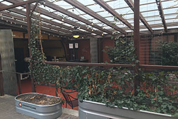

Downtown Harrisonburg

Links
Downtown Harrisonburg
Links
Harrisonburg is located in Virginia and is the home of James Madison University's Royal Dukes! Harrisonburg, Virginia is a tight-knit community and the Historic Downtown of Harrisonburg is filled with a surplus of restaurants and entertainment. Come explore this website and find information regarding Historic Downtown, JMU, links to restaurants, photos and more!